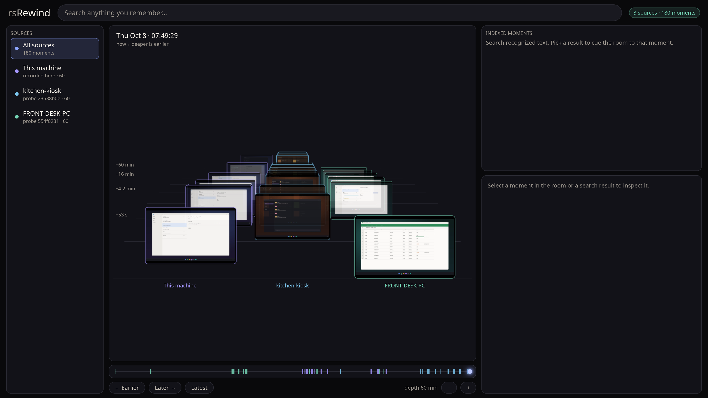
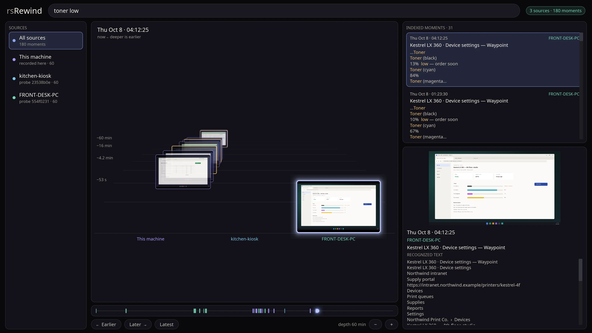
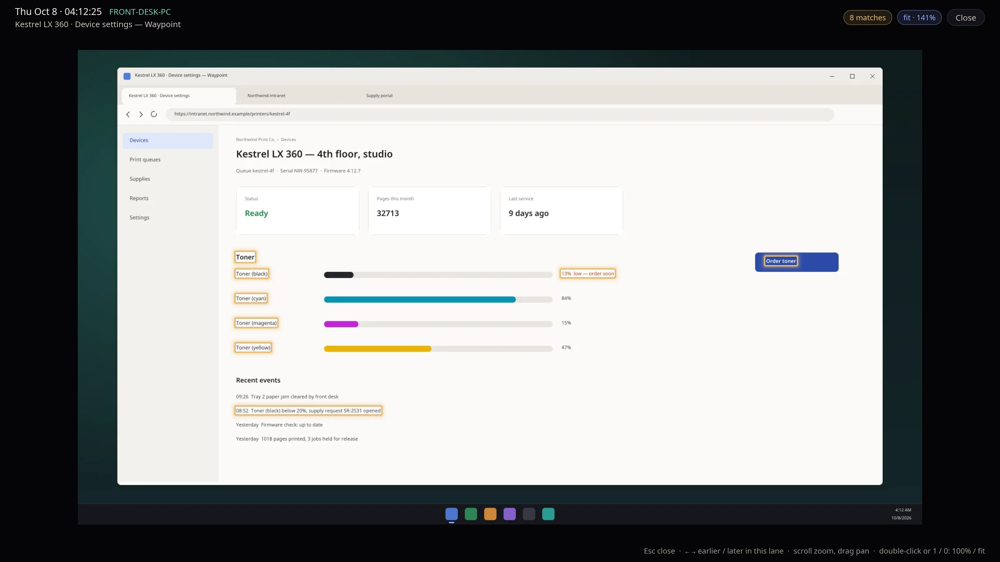

Find anything you saw.
rsRewind quietly records what changes on your screen, reads the words on it, and lets you search and rewind your own history. Everything runs on your machine: no account, no cloud, no telemetry, no server.
v0.1.2 for Windows 11, macOS 14+ (Apple Silicon) and KDE Plasma 6 · MIT licensed · All platforms
- Local-first
- Private by design
- Text search over screenshots
- Rewind window
- Command line
- MCP for assistants

You saw it. You did not save it. Now you need it.
A quote in a chat that scrolled away. The error message you closed before reading it properly. The page you had open on Tuesday and cannot find in any browser history. Most of a working day is never saved anywhere; rsRewind keeps a visual record so you can go back to the moment instead of reconstructing it.
The error before lunch
Search a word from the message. Jump to the screenshot, zoom in, and step back a few moments to see what you did just before it appeared.
The price you were quoted
Remember the vendor's name or the product? That is enough. Full-text search over everything that was on your screen finds the moment.
The version before you overwrote it
Rewind to the document as it looked an hour ago, read it off the screenshot, or save that frame as a picture.
What did I actually do today?
Browse the timeline, see the gaps (off, paused, idle, locked), and mark the moments you want to come back to.
Built to be trusted with your screen.
Local-first, by construction
There is no network code in the recording path, no listening socket, no cloud component and no account. Your history is files in a folder you own: a SQLite database and WebP screenshots.
Private by design
Exclusion rules are checked before anything is written, and a whole monitor is skipped while any excluded window is visible on it. Where a platform cannot provide that information, rsRewind does not record. The recorder's state is always visible; there is no hidden mode.
Records change, not time
About once a second per monitor it checks whether the screen changed meaningfully. An unchanged screen extends the current moment instead of storing another identical screenshot.
Reads what it sees, on device
Text recognition runs locally with the engine your platform already has: Windows.Media.Ocr, Apple Vision on macOS, Tesseract on Linux. The words become a full-text index you can search.
You decide what to keep
Defaults keep 90 days with a 50 GB soft limit. Pause for 15 minutes, an hour or until you resume; forget the last ten minutes or hour in two clicks from the icon; set retention and exclusions in one config file.
Open, inspectable, MIT
One Rust executable with subcommands and no browser runtime. Read the source, read the privacy policy, verify the checksums and signatures before you run it.
Watch. Read. Keep. Find.
- 1
Watch
The recorder runs as its own background process. Each tick it looks at every monitor, applies your privacy rules, and compares the frame with the last stored one. Only a meaningful change becomes a new moment.
- 2
Read
A separate thread recognises the text in each new screenshot, in the background, on your device. Nothing waits on it; recording never blocks on reading.
- 3
Keep
Moments, window metadata and recognised text go into a local SQLite database; screenshots are compressed WebP files beside it. Retention by age and size runs oldest-first. Backups happen before any schema migration.
- 4
Find
The rewind window, the
rsrewindcommand line and an optional MCP server all read the same history, read-only. The window runs as a separate process: if it crashes, recording continues.
The full picture, including the process model and the platform seam each operating system plugs into, is in the architecture document.
Search, scrub, mark, export.
Search
Type a few words you remember. Results take you straight to the moment, with the matching text highlighted on the screenshot.
Rewind
Glide along the timeline, zoom and pan a full-window screenshot, and step through nearby moments to recover the context around it.
Marks and keyframes
Press M to mark a moment with a label and hop between marks. Automatic keyframes stop at app switches, resumed recording and new screens, so you can skim a day in a few keystrokes.
Go to
Jump to 14:30, yesterday 9:00 or 15m from the navigator. The timeline shows the gaps where nothing was recorded; rsrewind gaps tells you why (off, paused, idle or locked).
Select and export
Click, Shift-click or Ctrl/Cmd-click to select moments, then copy a picture, save a PNG, or export a silent GIF or WebM clip (WebM when ffmpeg is installed). Exports are copies, outside your history.
Several computers, one view
Imported history from other machines appears as extra lanes. Filter to one computer or search across all of them. How transfers work →
See search and the screenshot viewer


One executable. Every capability is a subcommand.
The same rsrewind binary runs the recorder, the window, the tray icon and the command line. Human-readable output by default; --json gives you typed, stable records for scripts and agents.
search,recent,gaps,markfor finding and annotating momentsstart,stop,pause,resume,status,forgetfor controlexport,import,sourcesfor carrying history between machinesdoctor,data-dir,tray --autostartfor diagnostics and setup
$ rsrewind search konica toner
2026-10-06 21:37:56
Application: WindowsTerminal
Window: zebra crossing schedule
"... [konica] bizhub C360 [toner] low ..."
Image: .../media/2026/10/07/20261007T013756157Z_m1.webp (id 4)
$ rsrewind gaps --since 8h
$ rsrewind mark add --label "before the deploy"
$ rsrewind forget 15m --yesAsk your assistant. rsrewind mcp is a Model Context Protocol server over stdio for Claude Desktop, Claude Code and other MCP clients: "what was the error before lunch?" It is off until you enable it, shares only recognised text and window names from the last 30 days by default, never screenshots without a separate opt-in, and opens no network port. Anything an assistant reads may reach its provider. MCP setup and access controls →
Native on Windows, Mac and Linux.
One codebase, one executable per platform, each using the operating system's own capture and text-recognition APIs. Pick yours.
Windows
Windows 11, x64. Signed per-user installer or portable ZIP; no administrator rights needed. Capture with Windows.Graphics.Capture, text with Windows.Media.Ocr, a notification-area icon.
Get v0.1.2 for Windows →Mac
macOS 14 or newer, Apple Silicon. A native app in a disk image. Capture with ScreenCaptureKit, text with Apple Vision, a menu-bar item, login startup through a LaunchAgent.
Get v0.1.2 for Mac →Linux
KDE Plasma 6 on Wayland, x86-64. AppImage or tarball. Capture through KWin, text with Tesseract from your distribution, a system-tray icon. Other desktops can browse imported history.
Get v0.1.2 for Linux →Start with a harmless test session. This is an early release: history is unencrypted at rest and known privacy gaps are open. Read what gets recorded before using it on your everyday desktop.
Go further
Several computers
Export sealed history from a laptop or a second desk, carry the files over, and import them into one timeline. No server, no sync service.
Transfer history →Your controls
Pause, stop, exclusions, retention, forget. What is recorded, where it lives, and the limits of each control.
Understand your data →Documentation and source
Architecture, privacy policy, CLI and MCP references, changelog and the roadmap, all in the repository.
Explore the docs →